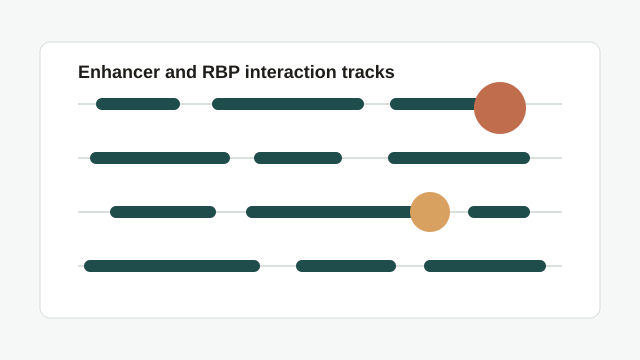
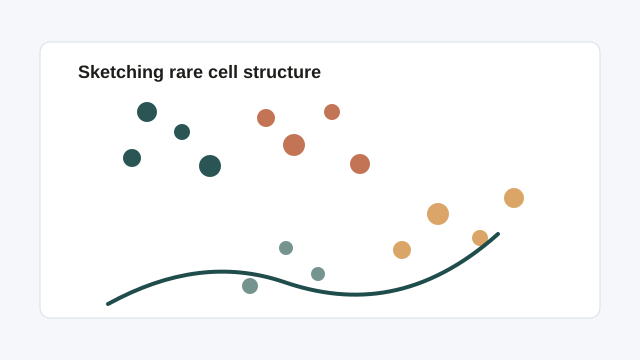
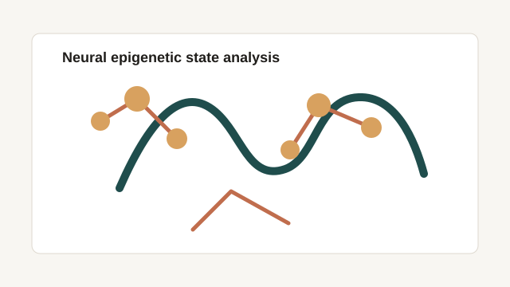

Projects
Selected research and computational biology projects.
A focused set of projects from my work in regulatory genomics, single-cell analysis, and neural
epigenetics.

NGS Analysis
Regulatory Genomics
Super Enhancer and RNA-Binding Protein Interaction Analysis
Processed and analyzed large-scale eCLIP, ChIP-seq, RNA-seq, ATAC-seq, and conservation
datasets from ENCODE and NCBI to interrogate enhancer-RBP interactions across roughly 700
genomic loci.
- Observed about 30% concordance between ChIP and eCLIP peaks in top super enhancers.
- Built a reproducible end-to-end bioinformatics pipeline for QC, alignment, peak calling, annotation, and visualization.
- Used Bedtools, bigWig utilities, and the UCSC Genome Browser to support scalable downstream reporting.

Single-Cell
Benchmarking
Sketch-Based Analysis of scRNA-seq Data
Engineered and benchmarked six sketching strategies on a 68k PBMC single-cell RNA-seq dataset
to evaluate rare cell capture and transcriptional diversity retention under aggressive
subsampling.
- Compared uniform, geometric, k-means, kernel herding, hashing, and PCA-guided sketching approaches.
- Built a variance-aware PCA-guided method that reduced data volume by 90% while preserving all biological clusters.
- Recovered 172 of 193 rare cells, enabling scalable transcriptomic analysis on standard hardware.

Neurogenomics
Machine Learning
Genomics and Epigenetics of the Brain
Analyzed single-cell NGS datasets with Python and R to study neural epigenetic states through
clustering, dimensionality reduction, transcription factor binding analysis, and statistical
comparison.
- Conducted integrated analysis of neurons, astrocytes, oligodendrocytes, and microglial cells.
- Applied CNNs and SVMs to identify molecular and functional differences between neural cell types.
- Reached classification accuracy of 91% while linking patterns back to biological interpretation.